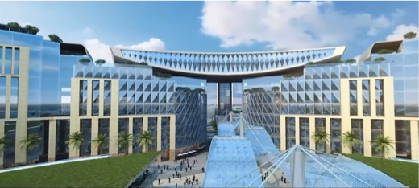

World Trade Centre - New Delhi
Name of project : World Trade Centre
Location : New Delhi
Client: NBCC
Architect : CDPL 25 Acres
Uniqueness: Cantilevered Sky Bridge
Materials & Framing
A combination of high grade of concrete, structural steel, post tensioning and composite sections have been used in the entire project.
Due to restriction on floor height but need for large clear spans, the chosen framing system is a combination of RCC beam-slab arrangement and post-tension beam + flat slab with drop panels complemented by composite columns.
The Sky Bridge extends as a cantilever on either side of the core and is built in structural steel. The floor system comprises of steel beam with deck slab.
Sky Bridge
The sky bridge connects towers F and G on the 8th and 9th floors, featuring fine dining restaurants and business lounges. It is accessed via an independent core with capsule elevators.
Foundation & Shoring
Isolated or combined footings are used without any raft due to lack of uplift. To rest the foundations 16m deep, a shoring system was provided to safeguard the embankment during excavation.
Due to the proximity of a nallah, a diaphragm wall is considered for the dual purpose of soil retention and shoring.
Project Execution & Timeline
The project was executed by NCC under an EPC model under strict timelines.
The 55 lakh square foot construction, including the Sky Bridge, was to be completed within 24 months.